Префектура Хоккайдо · Нисэко · архитектура
ICOR NISEKO: магазин и кафе в Нисэко, построенные как галерея для природы
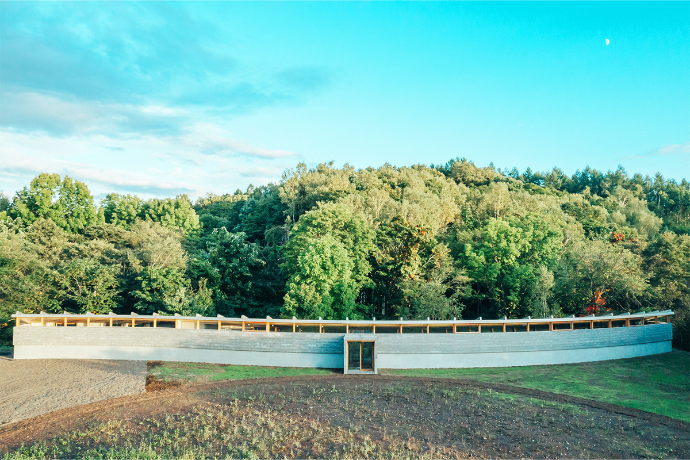
В 2021 году японский бренд средств по уходу за кожей ICOR открыл в Нисэко свой главный магазин с кафе и офисом. Здание спроектировали так, чтобы шумная трасса за спиной исчезла, а остались лес, речка и родниковая вода с горы Йотэй.
Место
Нисэко и его природа
ICOR NISEKO одновременно штаб-квартира бренда, его главный магазин и кафе. Здесь продают косметику, а в кафе подают лёгкие блюда и напитки, придуманные с оглядкой на красоту и здоровье. Но едут сюда и ради самого здания: о нём заговорили ещё во время стройки.
Нисэко лежит примерно в двух часах езды на машине от аэропорта Новый Титосэ и от Саппоро. На востоке поднимается гора Йотэй, входящая в национальный парк, на севере тянется хребет Нисэко с вершиной Нисэко-Аннупури, и это уже квазинациональный парк. Курорт со всех сторон окружён лесами и горами.
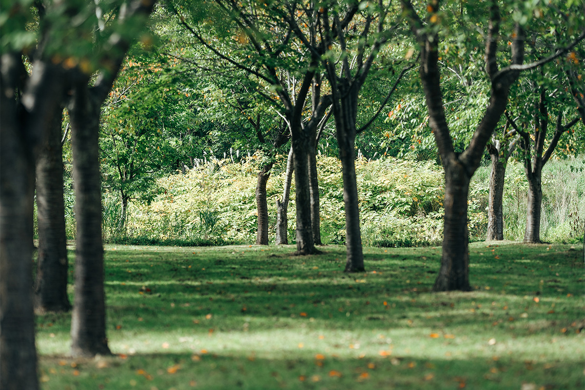
Само название пришло из языка айнов: «нисэй-ко-ан-пэцу» значит «река в ущелье». Йотэй за правильный силуэт зовут «Эдзо-Фудзи», то есть Фудзи северного острова, а зимой Нисэко славится пушистым снегом. Люди жили здесь очень давно: в округе нашли памятники конца эпохи Дзёмон, им около трёх тысяч лет.
Бренд
Сокровище на языке айнов
Слово «ICOR» взято из айнского языка и значит «сокровище». Земля, природа и вода для бренда и есть такие сокровища: их красоту нужно ценить, раскрывать и беречь, и с этой мысли ICOR начинался.
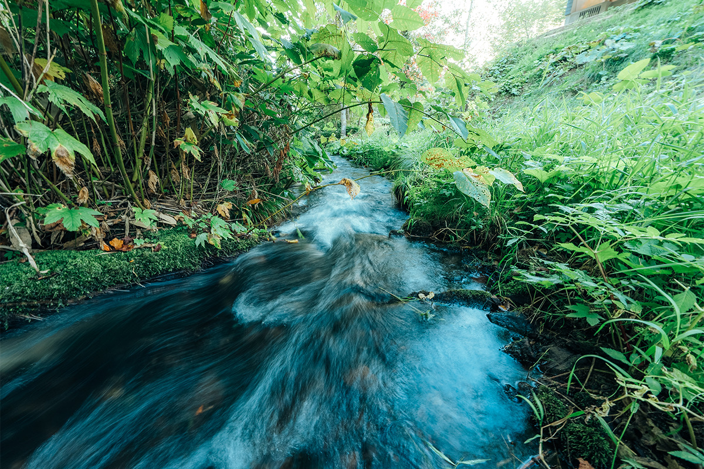
Бренд думает и об экологии. Свою продукцию он выпускает на заводе на Хоккайдо, чтобы сырьё не приходилось везти издалека, а для напитков в кафе подобрал особые стаканы, о них ниже.
Архитектура
Галерея для природы
Сверху здание похоже на вытянутую плавную букву S. Его проектировали архитектор, ландшафтный дизайнер и дизайнер интерьера, отталкиваясь от главной мысли бренда: и природа, и люди одинаково драгоценны. Воплощали проект мастера-строители, а сотрудники ICOR сами доделывали интерьер и попутно сочиняли меню кафе. Магазин строили с заботой о природе и задумывали как место, где люди и природа живут рядом и куда всем хочется возвращаться.
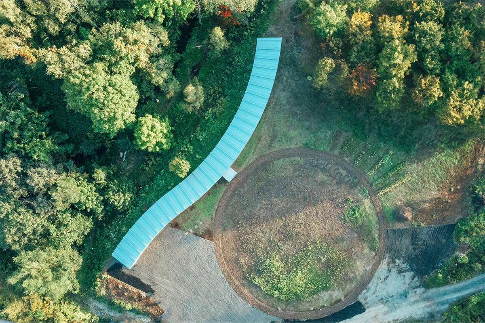
Здание спроектировал архитектор 1977 года рождения, который работал в Японии и за рубежом: он сделал «Дом из ёсинской криптомерии» вместе с Airbnb и садовое пространство в доме Луиса Баррагана в Мексике. Луис Барраган (1902–1988) был мексиканским архитектором, лауреатом Притцкеровской премии, его дом в Мехико входит в список Всемирного наследия ЮНЕСКО. Архитектор преподавал в Токийском технологическом институте, был приглашённым профессором в Гарварде и Калифорнийском университете в Лос-Анджелесе. В Нисэко его задачей было выразить идею бренда и как можно полнее раскрыть красоту самого места.
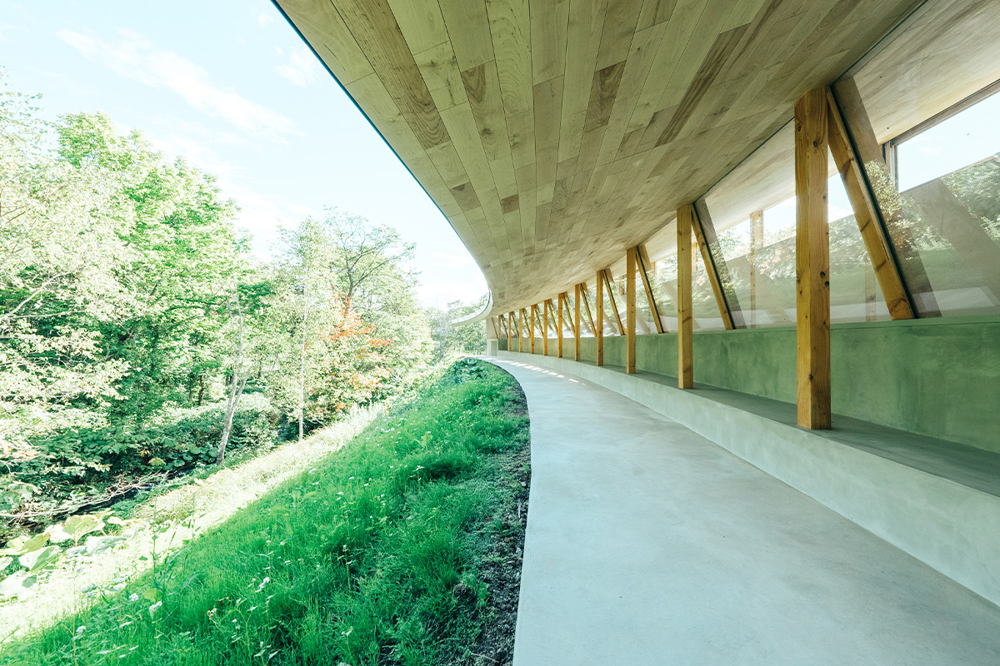
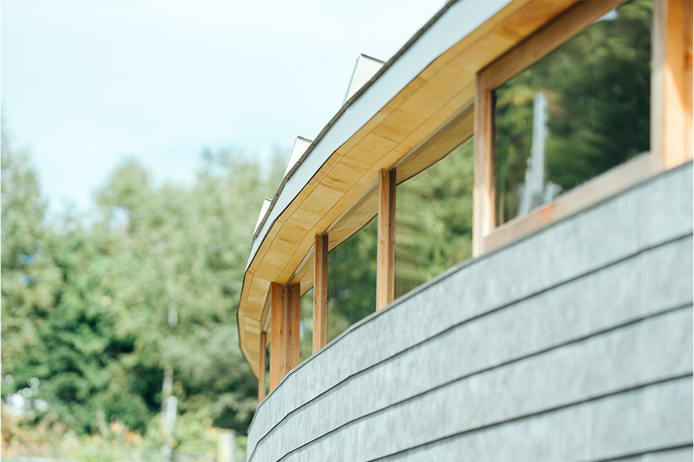
Магазин стоит у оживлённой национальной трассы, но внутри машин не видно и не слышно. Длинный изогнутый корпус отгораживает дорогу и собирает звук речки, которая бежит со стороны террасы. Её питают родники горы Йотэй, и журчание воды словно чувствуешь всем телом. Получилась галерея, где выставлена сама природа Нисэко, и смотреть на неё можно в любое время года.
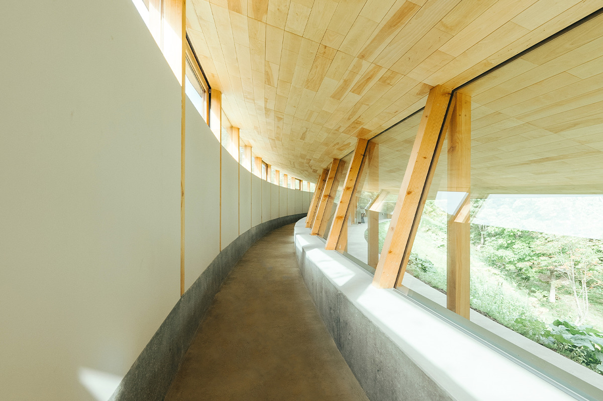
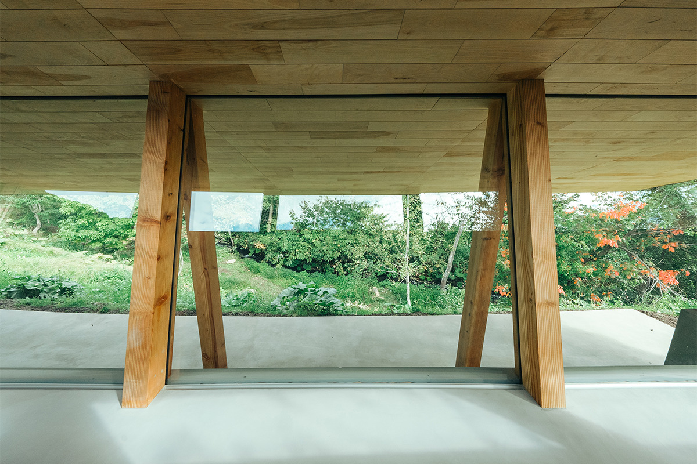
Интерьер
Стекло и свет
Интерьер придумал дизайнер интерьеров родом с Хоккайдо, 1986 года рождения. Он поработал в нескольких бюро и в 2019 году открыл своё, а в 2022 году работал в Токио и сам вёл проекты магазинов и домов от чертежа до стройки. Бренд особенно бережно относится к воде, и эту мысль дизайнер передал через стекло и свет. Прозрачные стеклянные прилавки сделаны до мелочей тонко, и товары с едой на них смотрятся особенно красиво.
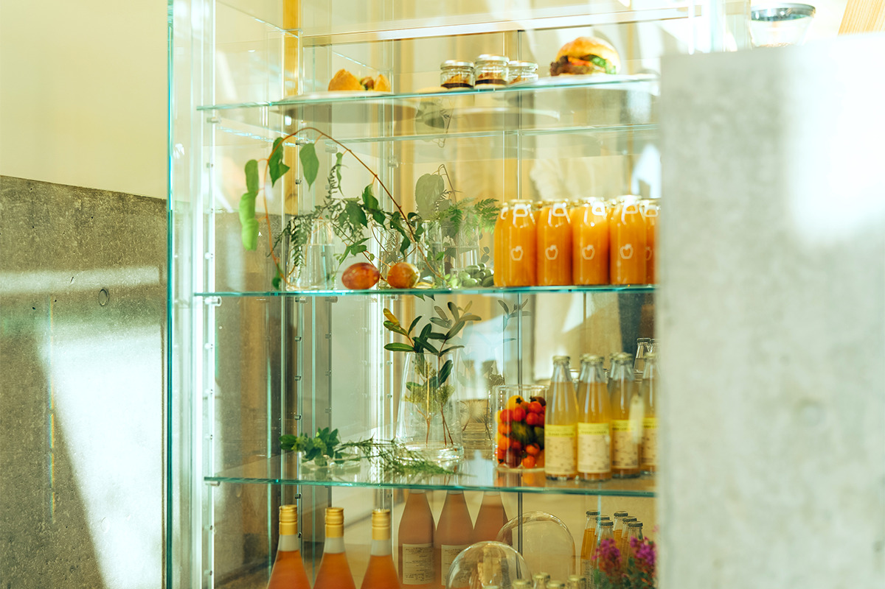
Свет в зале меняется весь день. Тени и блики ложатся на стеклянные прилавки и полки, и каждый такой рисунок живёт лишь мгновение. Летом можно сидеть снаружи под журчание речки и ветер, зимой смотреть на снег из тёплого зала, и в любой сезон ловить свой особенный свет.
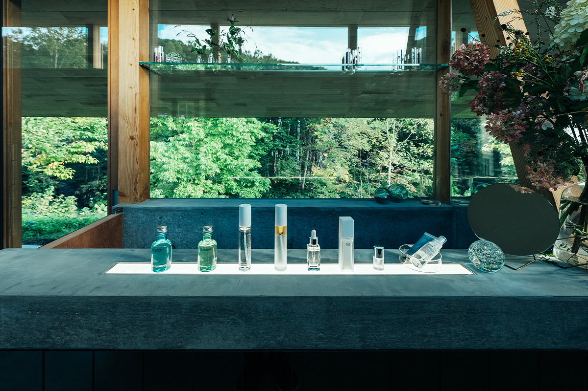
Сад
Ландшафт по законам пермакультуры
Ландшафт доверили дизайнеру, который основал бюро parsley и любит работать с той растительностью и рельефом, что уже есть на участке. Сад здесь задуман по принципам пермакультуры: это способ проектировать так, чтобы человек и природа могли долго жить рядом, не истощая землю.
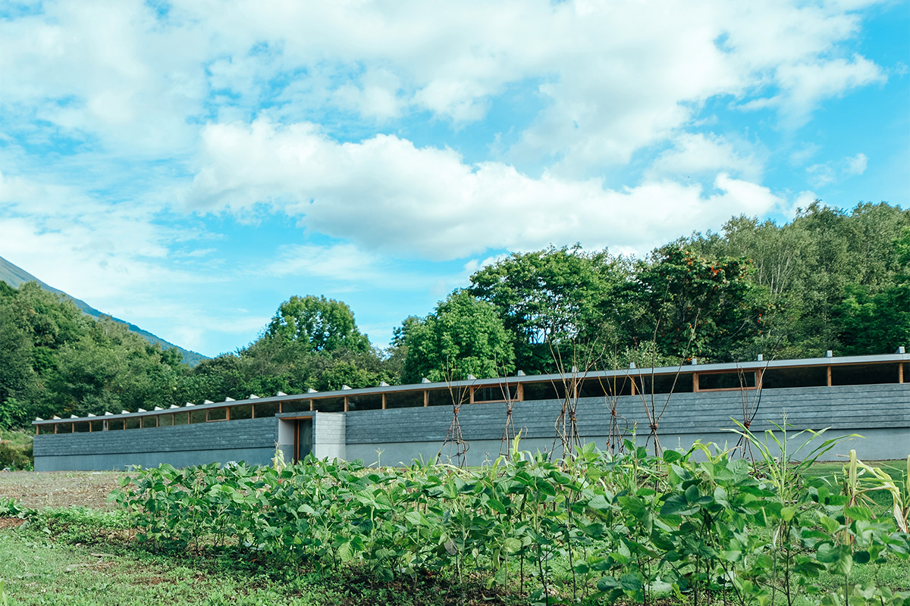
В 2022 году перед магазином готовили сад, где цветник смешан с огородом. Растения для компоста и для семян следующего года выращивали из семян на талой воде с горы Йотэй. Компост делали сами, вместе с сотрудниками ICOR: из сакэ-касу, рисовой шелухи и гречишной лузги, которые соседние фермы и заведения иначе выбросили бы. Так готовились к весне 2023 года.
Кафе
Хоккайдо на тарелке
В кафе подают лёгкие блюда и напитки. Есть сэндвичи из продуктов Нисэко, сладости и напитки, в которых чувствуется подход косметического бренда к красоте. Всё это можно взять и устроиться на скамье прямо в зале.
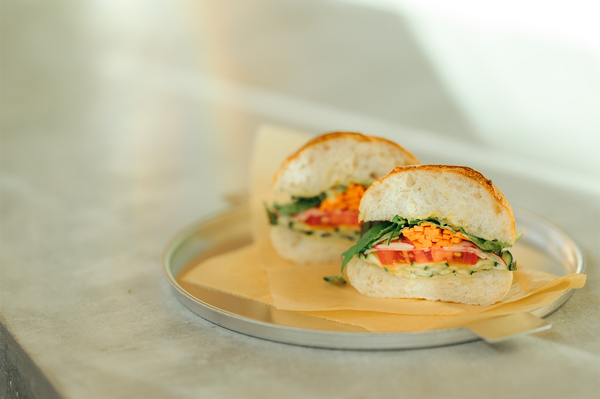
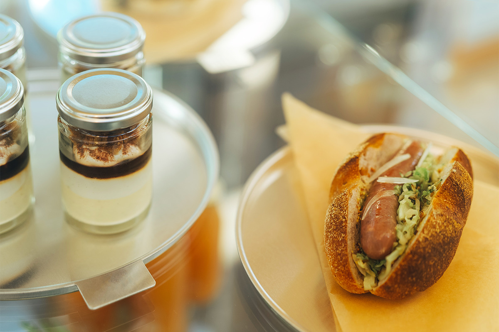
Сакэ-касу, остаток после отжима сакэ, это ферментированный продукт, питательный и полезный для кишечника. В брюле он даёт глубокий вкус, а эспрессо делает десерт по-взрослому горьковатым.
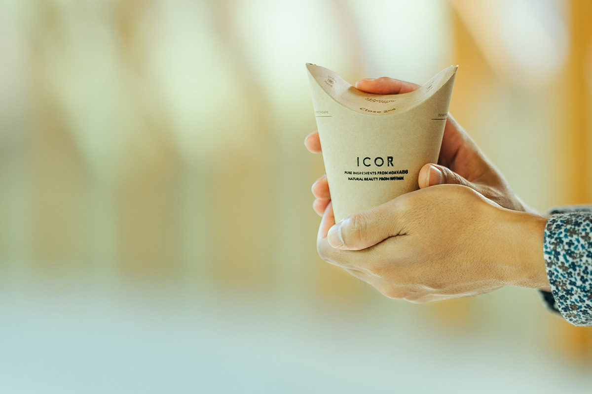
Магазин
Вся линейка ICOR
В магазине продают все средства ICOR, и каждое можно взять в руки, понюхать и попробовать на коже. Сотрудники хорошо разбираются в уходе: расспросят о состоянии кожи, расскажут, как пользоваться средствами, и подскажут, что выбрать. Здесь же есть то, чего нет ни в интернет-магазине, ни в других точках: соль для ванны, сделанная вместе с хоккайдскими отелями, и выпуски прошлых ограниченных серий.
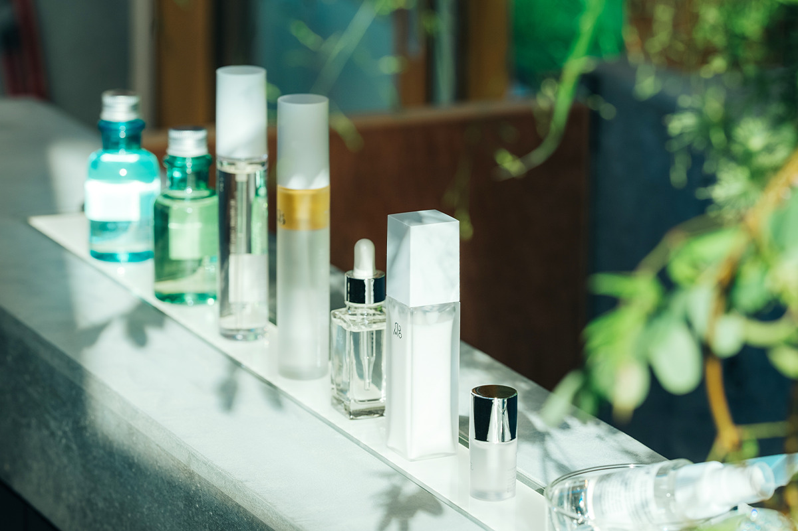
Зимой магазин утопает в снегу, и из окон открывается тихий белый пейзаж. С крыши свисают огромные сосульки, а на снегу иногда видны белки и зайцы. Смотреть на них приятно с чем-то тёплым в руках: на сакэ-касу здесь варят горячий шоколад, а из овощей делают суп-пюре.
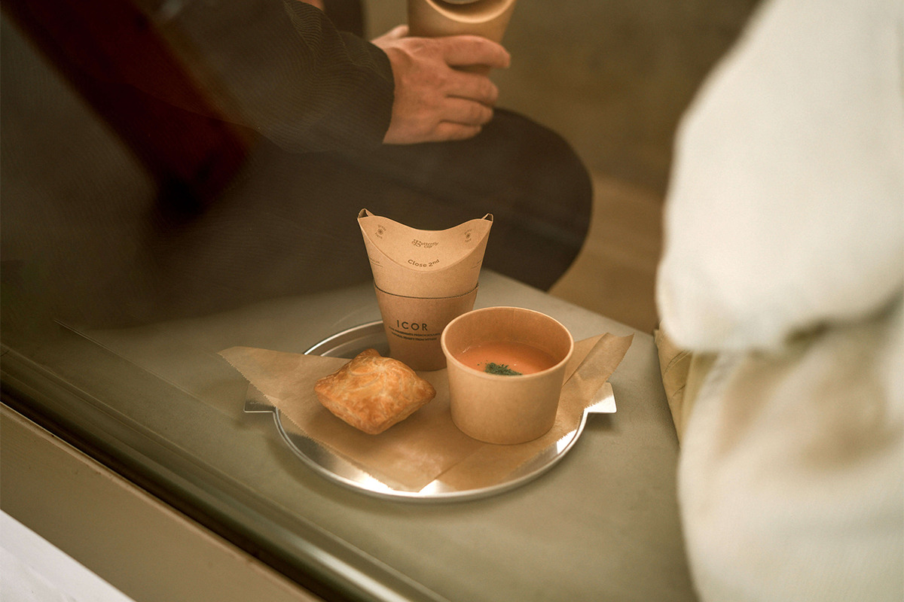
ICOR NISEKO
- Адрес
- префектура Хоккайдо, уезд Абута, Нисэко, Йотэй, 99-3
- Телефон
- +81 136-55-5460
- Часы работы
- 10:00–17:00
- Выходные
- среда, новогодние праздники
- Сайт
- icor.jp